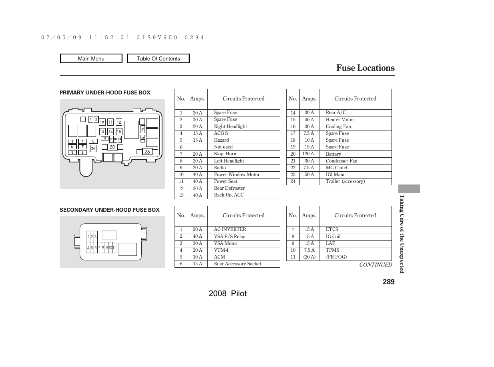
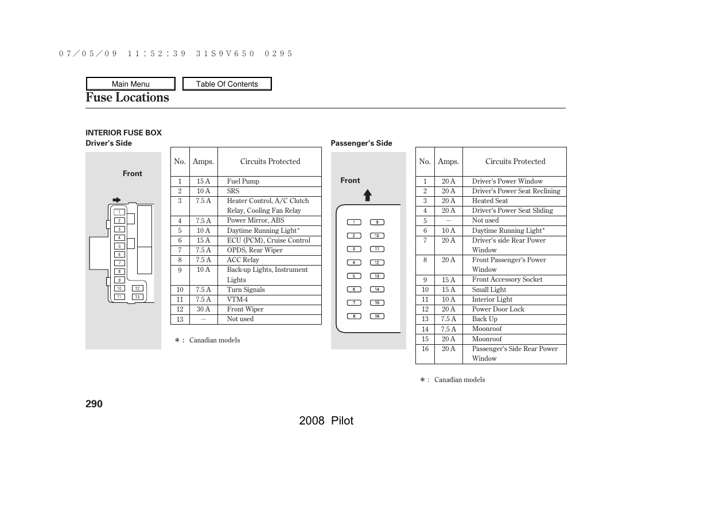

Under-hood fuse boxes

Manual page 289: primary and secondary under-hood fuse boxes.
Factory-manual fuse locations for the 2008 Honda Pilot. Use the diagrams to find the fuse position, then search the tables for its number, amp rating and protected circuit.
Search by fuse number, amperage or circuit name. Examples: fuel pump, 20A, headlight or fuse 9.
Showing all fuse entries.
These images are taken from the 2008 Honda Pilot owner's manual, printed pages 289–290. The number shown on the diagram corresponds to the “No.” column in the matching table.

Manual page 289: primary and secondary under-hood fuse boxes.

Manual page 290: driver-side and passenger-side interior fuse boxes.
| No. | Amps | Circuits protected |
|---|---|---|
| 1 | 20 A | Spare Fuse |
| 2 | 30 A | Spare Fuse |
| 3 | 20 A | Right Headlight |
| 4 | 15 A | ACG S |
| 5 | 15 A | Hazard |
| 6 | — | Not used |
| 7 | 20 A | Stop, Horn |
| 8 | 20 A | Left Headlight |
| 9 | 20 A | Radio |
| 10 | 40 A | Power Window Motor |
| 11 | 40 A | Power Seat |
| 12 | 30 A | Rear Defroster |
| 13 | 40 A | Back Up, ACC |
| 14 | 30 A | Rear A/C |
| 15 | 40 A | Heater Motor |
| 16 | 30 A | Cooling Fan |
| 17 | 7.5 A | Spare Fuse |
| 18 | 10 A | Spare Fuse |
| 19 | 15 A | Spare Fuse |
| 20 | 120 A | Battery |
| 21 | 30 A | Condenser Fan |
| 22 | 7.5 A | MG Clutch |
| 23 | 50 A | IG1 Main |
| 24 | — | Trailer (accessory) |
| No. | Amps | Circuits protected |
|---|---|---|
| 1 | 20 A | AC INVERTER |
| 2 | 40 A | VSA F/S Relay |
| 3 | 30 A | VSA Motor |
| 4 | 20 A | VTM-4 |
| 5 | 10 A | ACM |
| 6 | 15 A | Rear Accessory Socket |
| 7 | 15 A | ETCS |
| 8 | 15 A | IG Coil |
| 9 | 15 A | LAF |
| 10 | 7.5 A | TPMS |
| 11 | (20 A) | (FR FOG) — verify applicability against the vehicle's fuse-box cover. |
The factory manual prints fuse 11 and its rating/function in parentheses. Check the vehicle's own cover to confirm applicability.
| No. | Amps | Circuits protected |
|---|---|---|
| 1 | 15 A | Fuel Pump |
| 2 | 10 A | SRS |
| 3 | 7.5 A | Heater Control, A/C Clutch Relay, Cooling Fan Relay |
| 4 | 7.5 A | Power Mirror, ABS |
| 5 | 10 A | Daytime Running Light* (Canadian models) |
| 6 | 15 A | ECU (PCM), Cruise Control |
| 7 | 7.5 A | OPDS, Rear Wiper |
| 8 | 7.5 A | ACC Relay |
| 9 | 10 A | Back-up Lights, Instrument Lights |
| 10 | 7.5 A | Turn Signals |
| 11 | 7.5 A | VTM-4 |
| 12 | 30 A | Front Wiper |
| 13 | — | Not used |
* Daytime Running Light entry applies to Canadian models, as marked in the factory manual.
| No. | Amps | Circuits protected |
|---|---|---|
| 1 | 20 A | Driver's Power Window |
| 2 | 20 A | Driver's Power Seat Reclining |
| 3 | 20 A | Heated Seat |
| 4 | 20 A | Driver's Power Seat Sliding |
| 5 | — | Not used |
| 6 | 10 A | Daytime Running Light* (Canadian models) |
| 7 | 20 A | Driver's side Rear Power Window |
| 8 | 20 A | Front Passenger's Power Window |
| 9 | 15 A | Front Accessory Socket |
| 10 | 15 A | Small Light |
| 11 | 10 A | Interior Light |
| 12 | 20 A | Power Door Lock |
| 13 | 7.5 A | Back Up |
| 14 | 7.5 A | Moonroof |
| 15 | 20 A | Moonroof |
| 16 | 20 A | Passenger's Side Rear Power Window |
* Daytime Running Light entry applies to Canadian models, as marked in the factory manual.
Source: 2008 Honda Pilot Owner's Manual, “Fuse Locations,” printed pages 289–290. This page does not add relay positions that are not shown on those pages.